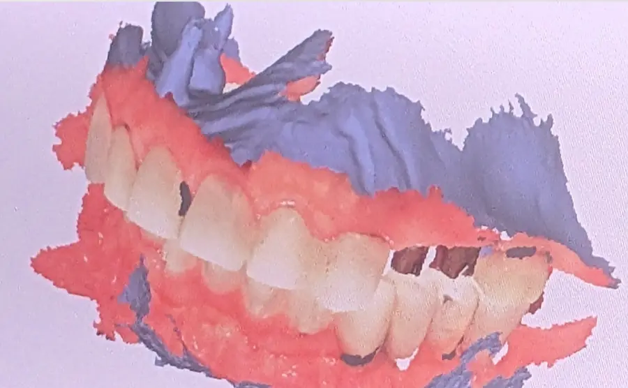

نسخه استخراجشده؛ ترجمه یا تأیید علمی انجام نشده است. وضعیت: captured
بیمار برای تحویل روکشهای ایمپلنت آمده است. جلسهی قبل روکشها به دلیل نداشتن ثبات باکولینگوال روی اباتمنتها تکرار شده بودند. این بار اباتمنتها بسته شدند، روکشها امتحان شدند، ثبات کامل بود و لقی وجود نداشت. به نظر میرسید مشکل ثبات در لابراتوار حل شده است.

برداشت اولیه این بود که خطا در طراحی یا فرمدهی اباتمنت توسط لابراتوار است و احتمالاً جلسهی قبل مشکلات دیگر آنقدر زیاد بودند که این مورد توجه نشده بود. قرار شد فایل طراحی برای بررسی اختلاف مارجینال ریج درخواست شود.
هنگام باز کردن اباتمنتها، حس باز شدن مثل همیشه نبود و اباتمنت زودتر از حد انتظار از روی فیکسچر جدا شد. این حس غیرعادی، شک به درگیر نبودن کامل هگز را ایجاد کرد. با جایگذاری مجدد و بستن پیچ، اباتمنت بهطور کامل نشست، فضای لازم برای زیرکونیا فراهم شد، روکش در موقعیت درست قرار گرفت و اکلوژن اصلاح شد.
مشکل اصلی خطای لابراتوار نبود. اباتمنت بهطور کامل روی هگز ننشسته و مختصری نابهجا بود و همین باعث شده بود بلندتر باشد. این ارتفاع اضافه هم روکش و هم اباتمنت را بلند نشان داد؛ حتی اختلاف مارجینال ریج با دندان مجاور هم میتوانست پیامد همین جابهجایی اکلوزالی باشد، نه لزوماً خطای طراحی. یعنی یک خطای جزئی در نشستن، خودش را بهشکل چند خطای مستقل و ظاهراً لابراتواری نشان داده بود.
نشستن ناقص علاوه بر تغییر ارتفاع، خطر میکروگپ، لقی پیچ و بار غیرطبیعی روی مجموعه را هم به همراه دارد.
نوع سؤال: ساخت کلمه · 3 خانه
حروف منبع: ز · گ · ه